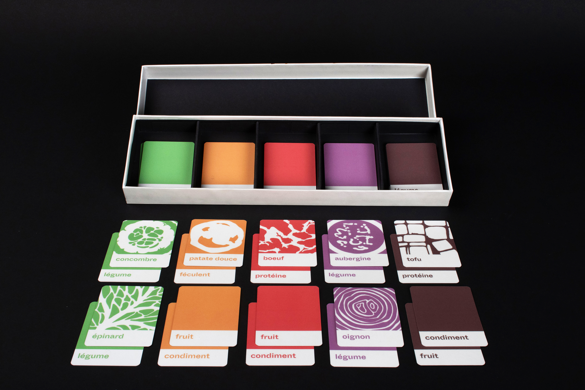
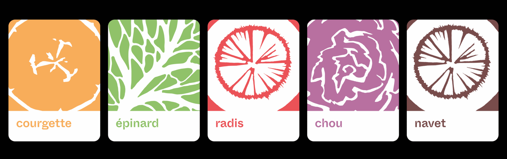
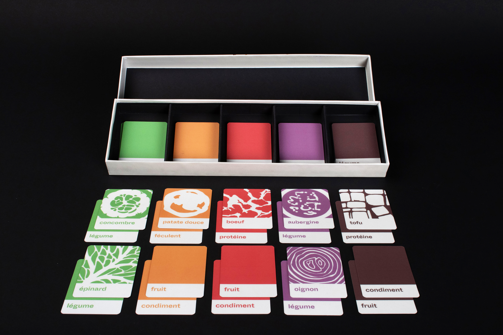
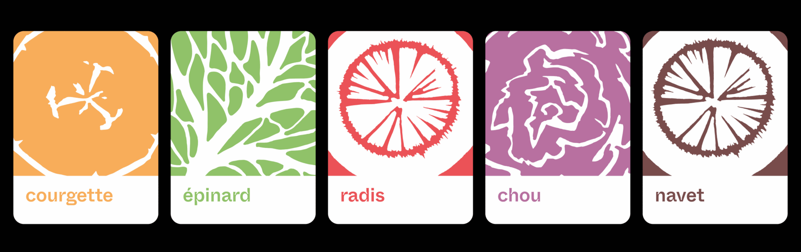

À LA CARTE
“À la carte” is a project that promotes healthier and more diverse diets, particularly
among young people, by mixing food and colour. Numerous studies indicate that a varied diet,
often referred to as rainbow food, helps in balancing and enhancing the essential micronutrients
required by our bodies. This initiative consists of a card game composed of five types of cards
designed for both single-player and multiplayer modes. The game revolves around five categories
of food colours, known as pigments, each possessing various beneficial properties: green
(chlorophyll for cardiovascular health), yellow/orange (carotenoids for eyesight and immune system),
red (lycopene as an antioxidant), purple (anthocyanins for memory and blood circulation), and
white/brown (potassium for its antiviral and antibacterial properties).
The gameplay proceeds as follows (with potential variations): the player lays out all the cards
face-down and then randomly selects 4 vegetable cards, 2 carbohydrate cards, and 2 protein cards
(in quantities aligned with the recommended intake per meal, which is 2/4 vegetables, 1/4 carbohydrates,
and 1/4 proteins). Among the chosen cards, there must be at least one card representing each colour
category. Subsequently, the player decides how to prepare the ingredients. They are not obligated
to combine all ingredients into a single dish; instead, they can opt for separate recipes.
Additionally, the game box includes a guide to assist with the cooking process and a text pad to write the recipes.
The objective of this game is to offer an alternative to conventional cooking recipes,
encouraging individuals to experiment with different ingredients in a manner that
positively impacts their lives, all while enjoying a fun and interactive experience.
Card game
TOOLS:
Illustration, Vector, Packaging
DATE:
21.12.24
OBJECT:
Professionnal school project, CFPA
LOCATION:
Geneva, Switzerland
 


